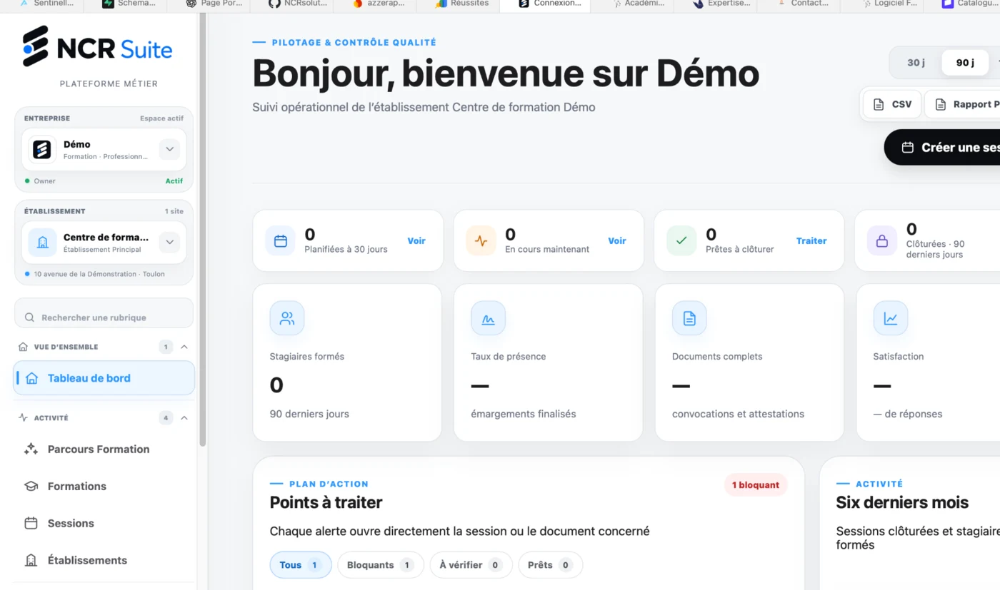
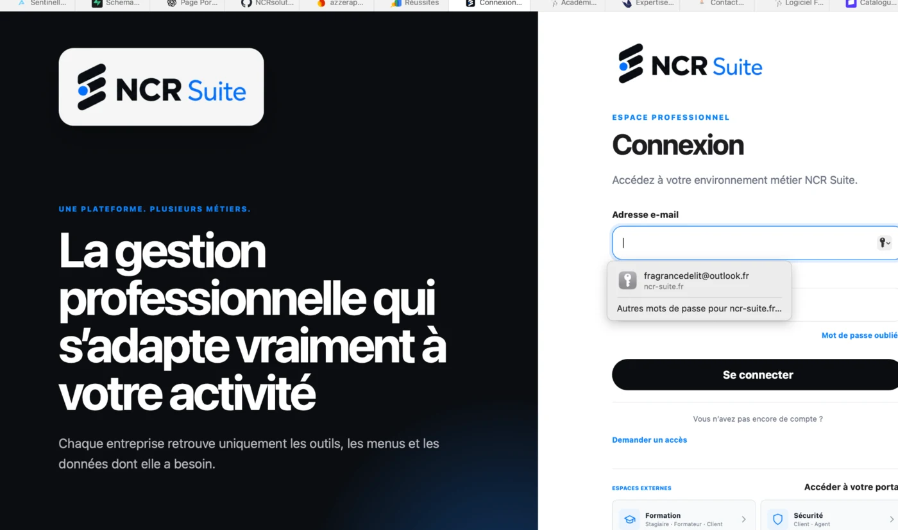
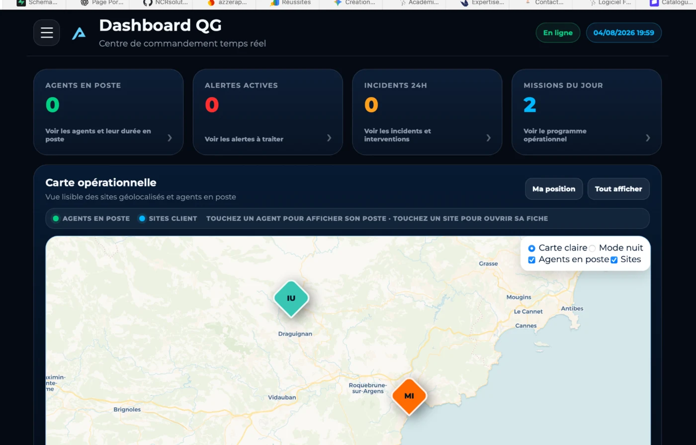
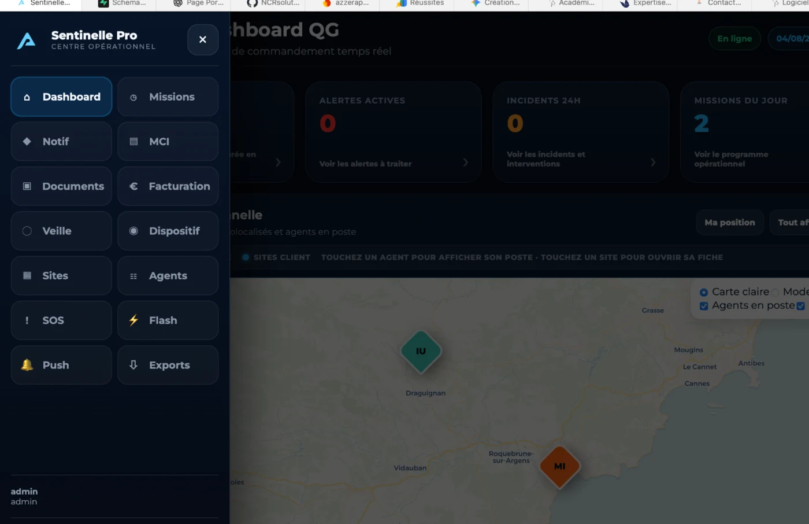
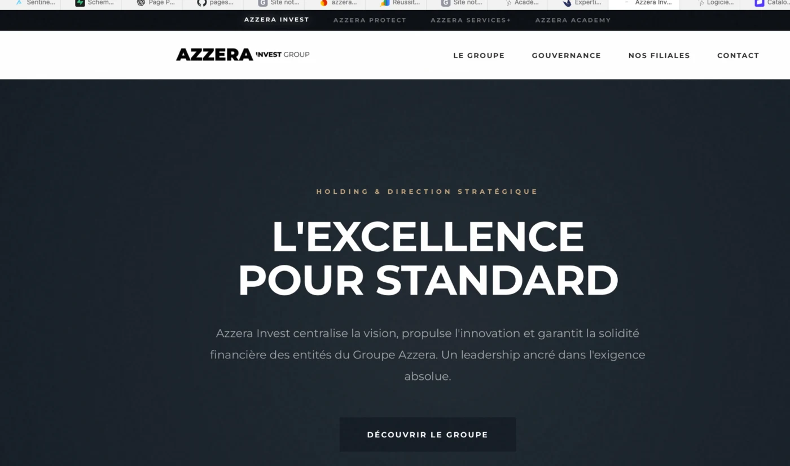
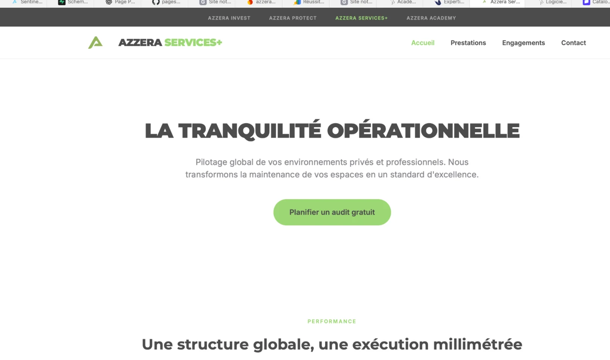
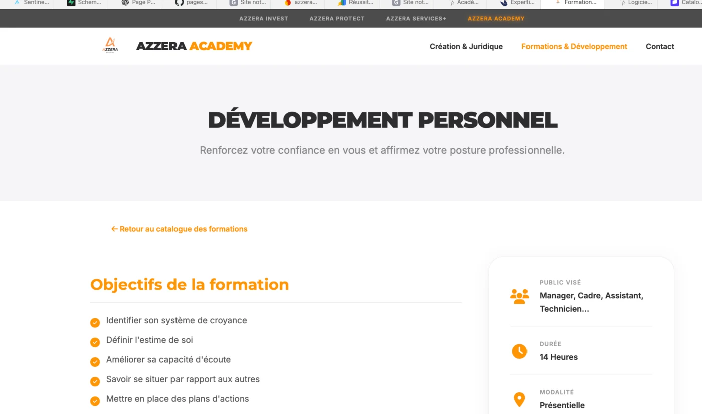

à l’interface évidente.
UX, architecture, design system et développement dans une même logique.
Portfolio immersif B2B
Des produits numériques conçus pour être compris, adoptés et utilisés sur le terrain.
UX, architecture, design system et développement dans une même logique.
Des expériences performantes, responsables et adaptées aux usages réels.
Scène 2 · L’inception du projet
La caméra traverse la structure pendant que le projet passe de l’intention à un système réellement exploitable.
Scène 3 · La matière devient produit
La plongée débouche sur des interfaces conçues, développées et utilisées dans des contextes professionnels concrets.
Découvrir les projets ↓Réalisations réelles
Des interfaces métier, des applications mobiles et des écosystèmes web construits à partir de problématiques concrètes.
Une plateforme modulaire qui centralise pilotage, sessions, documents et indicateurs dans une expérience métier cohérente.


Supervision temps réel, agents, sites, alertes et missions dans une interface conçue pour le terrain et le QG.


Formation et révision SST avec espace élève, session live, modules thématiques et quiz interactifs.


Une famille de sites pour Azzera Invest, Azzera Services+ et Azzera Academy, chacun avec sa voix et sa couleur métier.



Une méthode complète
Le design, le développement et la performance sont traités comme un seul système, pas comme trois prestations séparées.
Parcours lisibles, hiérarchie claire et interactions centrées sur l’usage.
Code structuré, composants réutilisables et comportement responsive maîtrisé.
Chargement optimisé, animations mesurées et expérience fluide sur chaque écran.
Cohérence visuelle et fonctionnelle sur l’ensemble des produits et des pages.
Prêt à construire ?
Site vitrine, produit SaaS, PWA ou application métier : partons du problème réel pour créer une expérience mémorable et utile.